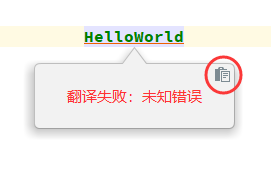
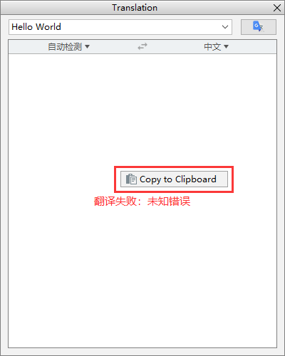

特征
- 多翻译引擎
- 多语言互译
- 语音朗读
- 自动选词
- 自动单词拆分
兼容除 MPS 外所有产品编译号为 143 以上的
Jetbrains IDE
产品。
支持的 IDE:
- Android Studio
- IntelliJ IDEA
- IntelliJ IDEA Community Edition
- PhpStorm
- WebStorm
- PyCharm
- PyCharm Community Edition
- RubyMine
- AppCode
- CLion
- DataGrip
- Rider
安装
使用 IDE 内置插件系统安装：
- Preferences(Settings) > Plugins > Browse repositories... > 搜索并找到"Translation" > Install Plugin.
手动安装：
安装好后重新启动 IDE 即可。
使用
1. 申请有道智云翻译服务（可选）
- 注册有道智云帐号并获取其应用ID和密钥
- 绑定应用ID和密钥：Preferences(Settings) > [Other Settings] > Translation >
有道翻译
注：请注意保管好你的应用密钥，防止其泄露。如帐号欠费，将无法使用。
2. 申请百度翻译服务（可选）
- 注册百度翻译开放平台帐号并获取其应用ID和密钥
- 绑定应用ID和密钥：Preferences(Settings) > [Other Settings] > Translation >
百度翻译
注：请注意保管好你的应用密钥，防止其泄露。如帐号欠费，将无法使用。
3. 开始翻译
选择文本或者鼠标指向文本 > 单击鼠标右键 > Translate
或者使用快捷键进行翻译，详见 Actions.
4. 切换翻译引擎
点击状态栏的翻译引擎状态图标或者使用快捷键 Ctrl + Shift + S（Mac OS: Control
+
Meta + Y）可以快速切换翻译引擎，目前有谷歌翻译、有道翻译和百度翻译。
Actions
-
Show Translation Dialog...
打开翻译对话框。默认显示在工具栏上。默认快捷键:
- Windows - Ctrl + Shift + O
- Mac OS - Control + Meta + I
-
Translate
取词并翻译。如果有已选择的文本，优先从选择的文本内取词，否则默认以最大范围自动取词（该取词模式可在Settings中配置）。默认显示在编辑器右键菜单上，默认快捷键:
- Windows - Ctrl + Shift + Y
- Mac OS - Control + Meta + U
-
Translate(Inclusive)
取词并翻译。自动以最大范围取最近的所有词，忽略手动选择的文本。默认快捷键: (无)
-
Translate(Exclusive)
取词并翻译。自动取最近的单个词，忽略手动选择的文本。默认快捷键: (无)
-
Translate and Replace...
翻译并替换。取词方式同Translate操作。默认显示在编辑器右键菜单上，默认快捷键:
- Windows - Ctrl + Shift + X
- Mac OS - Control + Meta + O
-
Translate Text Component
翻译一些文本组件（如快速文档、提示气泡、输入框……）中选中的文本，不支持自动取词。默认快捷键:
- Windows - Ctrl + Shift + Y
- Mac OS - Control + Meta + U
-
Choose Translator
快速切换翻译引擎。默认快捷键:
- Windows - Ctrl + Shift + S
- Mac OS - Control + Meta + Y
-
Show Instant Translation Dialog
显示即时翻译对话框。默认快捷键: (无)
-
Word of the Day
显示每日单词对话框。默认快捷键: (无)
FAQ
-
翻译内容出现乱码怎么办？
答：出现乱码一般是因为字体中没有相应的字符的问题，可以到插件的设置页面修改字体以解决乱码问题（如下图所示）。

-
出现网络错误或者网络连接超时怎么办？
答：
- 检查网络环境，确保网络畅通。
- 检查是否是因为使用了代理软件而导致插件无法访问翻译API。
- 检查IDE代理配置，查看是否是因为IDE代理配置导致的问题。
- 如果使用的是谷歌翻译，检查谷歌翻译配置，查看是否勾选了`使用translate.google.com`选项（如果系统语言环境是非中文的话，此选项是默认勾选的），translate.google.com在国内是需要VPN才能访问的。另外，TTS功能使用的也是谷歌翻译的API。
-
MacOS、Linux下无法保存应用密钥，出现校验签名失败怎么办？
答：可以尝试将密码保存方式改成In KeePass方式 (Settings > Appearance & Behavior > System
Settings > Passwords)，原因与细节：
-
为什么2.0以前的版本快捷键在新版本都不能用了?
答：由于2.0以前的版本的快捷键大多与IDE默认的快捷键有冲突，抢占了IDE的默认快捷键。所以，从2.0版本以后，重新设置了插件的默认快捷键，而2.0以前的版本的快捷键已被废弃。
-
快捷键不能使用怎么办?
答：快捷键不能使用可能是因为被其他插件或者外部应用占用了，可以为相应的操作重新设置新的快捷键。
-
如何反馈一个问题，在哪里反馈?
答：如果发现插件的任何问题，或者对插件有任何意见或建议，可以点击这里反馈。在反馈问题时，请记得附上错误信息，其收集如下图所示（错误信息将会被拷贝到剪贴板）：
